raft-rs
- data struct
- RawNode
- election
- heartbeat
- log append
- snapshot
- conf change
- group commit
- Read 线性一致性
- 服务对接接口
- 参考
- TODO:
- draft
data struct
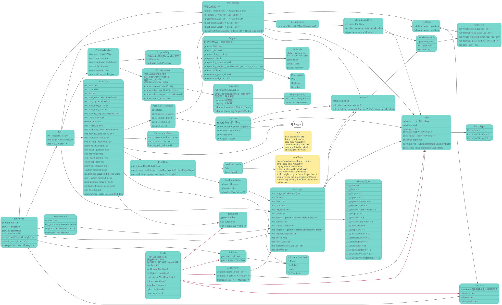
RaftLog
#![allow(unused_variables)] fn main() { pub struct RaftLog<T: Storage> { /// Contains all stable entries since the last snapshot. pub store: T, /// Contains all unstable entries and snapshot. /// they will be saved into storage. pub unstable: Unstable, /// The highest log position that is known to be in stable storage /// on a quorum of nodes. /// /// Invariant: applied <= committed pub committed: u64, /// The highest log position that is known to be persisted in stable /// storage. It's used for limiting the upper bound of committed and /// persisted entries. /// /// Invariant: persisted < unstable.offset && applied <= persisted pub persisted: u64, /// The highest log position that the application has been instructed /// to apply to its state machine. /// /// Invariant: applied <= min(committed, persisted) pub applied: u64, } }
RawNode
-
RawNode::propose 发起一次新的提交，尝试在 Raft 日志中追加一个新项；
-
RawNode::ready_since 从 Raft 节点中获取最近的更新，包括新近追加的日志、新近确认的日志，以及需要给其他节点发送的消息等；
-
在将一个 Ready 中的所有更新处理完毕之后，使用 RawNode::advance 在这个 Raft 节点中将这个 Ready 标记为完成状态。
tick
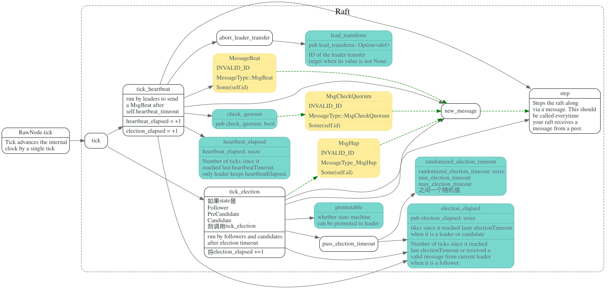
election
PreCandidate
在follower成为candidate之前，会先成为PreCandidate 然后发起prevote投票，prevote请求并不会增大term
如果赢得了prevote选举，才会变为Candidate，发起真正的选举.
tick election: 发起投票
发起election
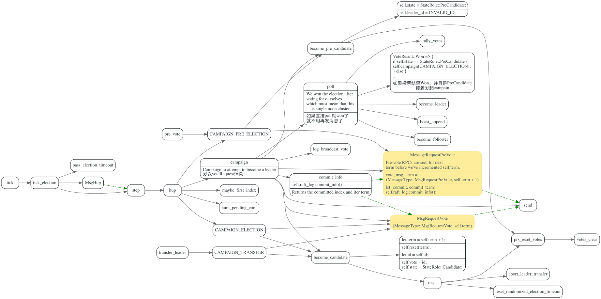
handle MsgRequestVote/MsgRequestPreVote
主要会检查m.term(消息的term)和自己term, 以及candidate的日志是否足够新
#![allow(unused_variables)] fn main() { MessageType::MsgRequestVote | MessageType::MsgRequestPreVote => { // We can vote if this is a repeat of a vote we've already cast... let can_vote = (self.vote == m.from) || // ...we haven't voted and we don't think there's a leader yet in this term... (self.vote == INVALID_ID && self.leader_id == INVALID_ID) || // ...or this is a PreVote for a future term... (m.get_msg_type() == MessageType::MsgRequestPreVote && m.term > self.term); // ...and we believe the candidate is up to date. if can_vote && self.raft_log.is_up_to_date(m.index, m.log_term) && (m.index > self.raft_log.last_index() || self.priority <= m.priority) { //发送prove Resp }else { //发送reject resp } }
handle MsgRequestPreVoteResponse/MsgRequestVoteResponse
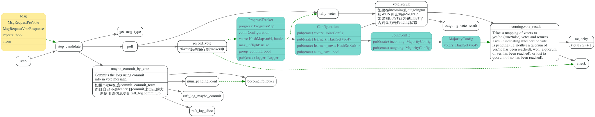
leader transfer
heartbeat
leader: send_heartbeat
leader定时向所有成员发送Heartbeat, 注意，这块的commit 是min(pr.matched, self.raft_log.committed)
#![allow(unused_variables)] fn main() { // Attach the commit as min(to.matched, self.raft_log.committed). // When the leader sends out heartbeat message, // the receiver(follower) might not be matched with the leader // or it might not have all the committed entries. // The leader MUST NOT forward the follower's commit to // an unmatched index. }
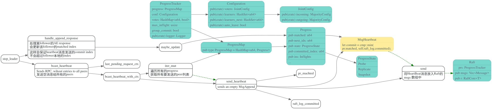
follower/candidate: handle_heartbeat
如果从leader收到的msg term >= self.term, 会重置heartbeat_timeout时间，然后更新raft_log的committed_index
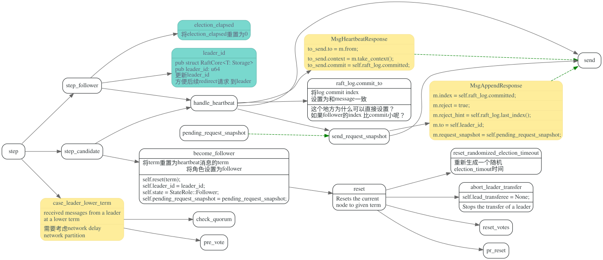
leader: handle_heartbeat_response
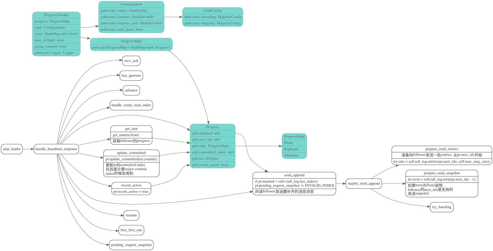
log append
propose
app 希望向 Raft 系统提交一个写入时，需要在 Leader 上调用 RawNode::propose 方法
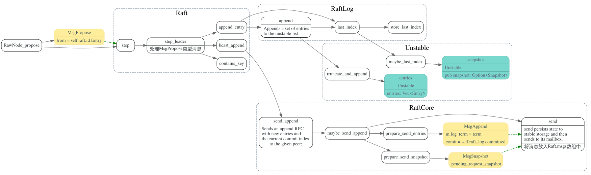
follower: handle_append_entries
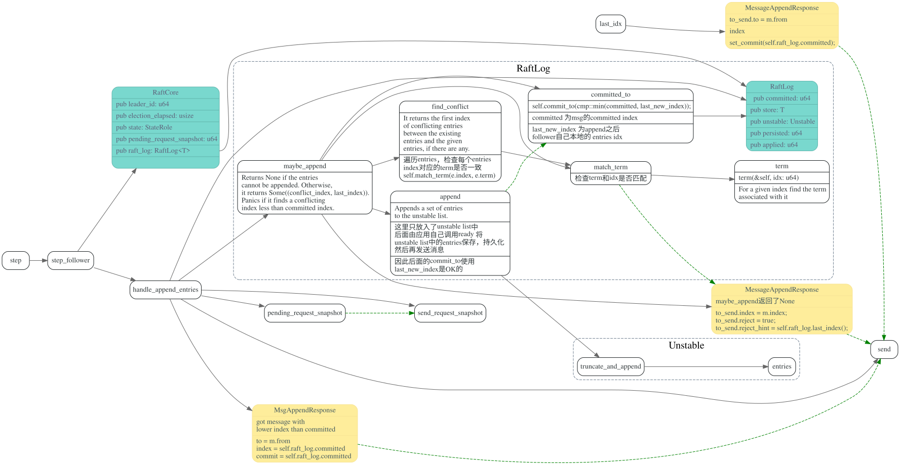
leader: handle_append_response
progressMap
leader 处理follower的append entries 的回复。 在哪里判断收到了大部分follower的确认? 怎么更新自己的commit index的?
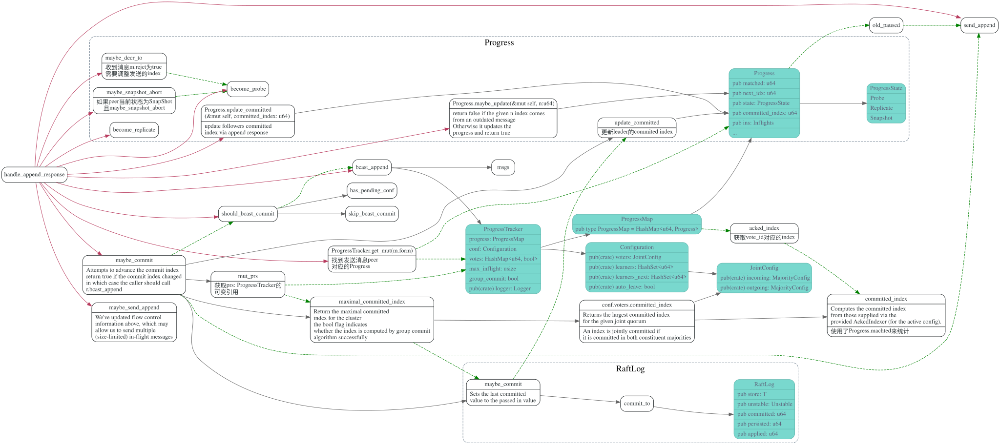
snapshot
snapshot msg struct
这个需要主动发起才行？
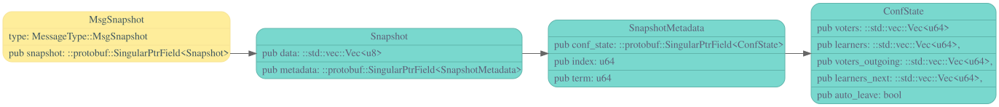
follower send request snapshot
z
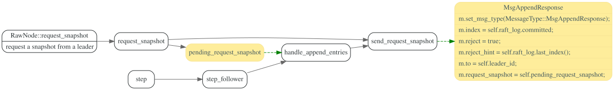
leader send snapshot
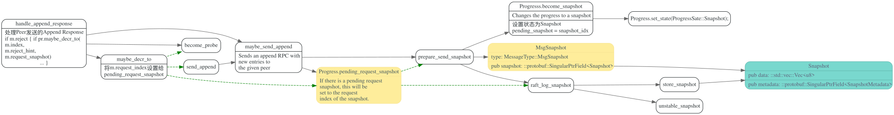
follower handle snapshot
要处理snapshot，以及confstate
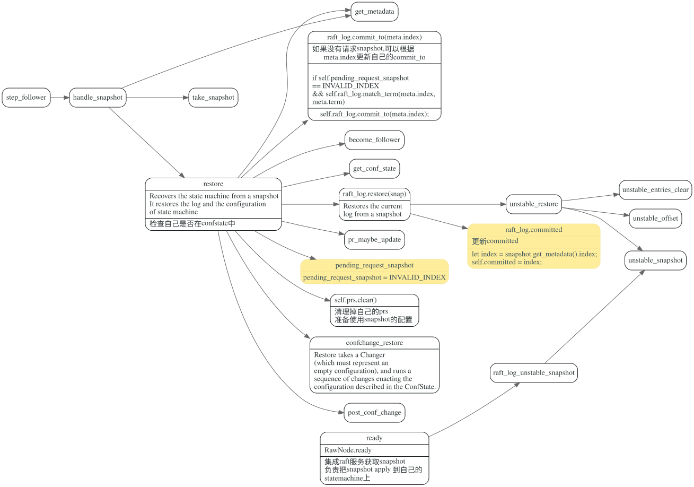
conf change
在leader节点， 通过RawNode.propose_conf_change 使用上述Log Append机制，
发送ConfChange日志给raft cluster中其他节点。
在ConfChange Log Entry committed之后，集成raft-rs的服务，在处理committed Log Entry时, 会调用RawNode.apply_conf_change 更改conf配置，最终这些修改会更改
ProgressTracker中的progress和conf， 并进入JointConsensus，同时使用新老配置来计算committed index和统计vote result。
leader节点在commit_apply时，如果发现applied 的Log Entry中有ConfChange entry(还有其他一些条件)
会再发一个空的ConfChange Log Entry，在该日志被apply_conf_change时，会清空JointConfig的outgoing，
结束JointConseus状态。
Joint Consensus
此处贴上论文中的那张图。
#![allow(unused_variables)] fn main() { //JointConfig pub struct Configuration { //incoming 为新的配置 pub(crate) incoming: MajorityConfig, //outgoing 为老的配置 pub(crate) outgoing: MajorityConfig, } // MajorityConfig pub struct Configuration { voters: HashSet<u64>, } }
计算committed index
#![allow(unused_variables)] fn main() { //同时统计新老配置中的committed index // JointConfig pub fn committed_index(&self, use_group_commit: bool, l: &impl AckedIndexer) -> (u64, bool) { let (i_idx, i_use_gc) = self.incoming.committed_index(use_group_commit, l); let (o_idx, o_use_gc) = self.outgoing.committed_index(use_group_commit, l); (cmp::min(i_idx, o_idx), i_use_gc && o_use_gc) } //MajorityConfig pub fn committed_index(&self, use_group_commit: bool, l: &impl AckedIndexer) -> (u64, bool) { if self.voters.is_empty() { // This plays well with joint quorums which, when one half is the zero // MajorityConfig, should behave like the other half. return (u64::MAX, true); } // other codes } }
统计vote result
#![allow(unused_variables)] fn main() { // pub fn vote_result(&self, check: impl Fn(u64) -> Option<bool>) -> VoteResult { let i = self.incoming.vote_result(&check); let o = self.outgoing.vote_result(check); match (i, o) { // It won if won in both. (VoteResult::Won, VoteResult::Won) => VoteResult::Won, // It lost if lost in either. (VoteResult::Lost, _) | (_, VoteResult::Lost) => VoteResult::Lost, // It remains pending if pending in both or just won in one side. _ => VoteResult::Pending, } } // majority config pub fn vote_result(&self, check: impl Fn(u64) -> Option<bool>) -> VoteResult { if self.voters.is_empty() { // By convention, the elections on an empty config win. This comes in // handy with joint quorums because it'll make a half-populated joint // quorum behave like a majority quorum. return VoteResult::Won; } } }
ConfChange Log Entry 数据结构
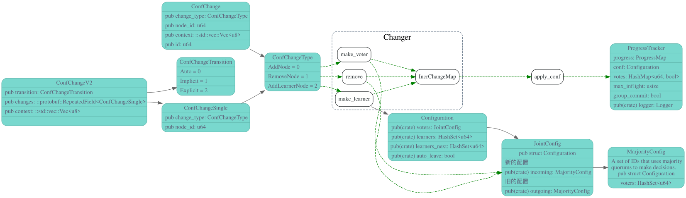
propose conf change
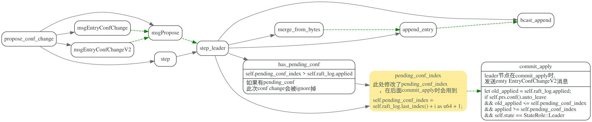
apply conf
enter joint
leader节点的ConfChange日志被commit后，节点在apply该日志时，开始使用JointConseus， 同时使用新(incoming)老(outgoing)配置来做统计vote和计算committed index
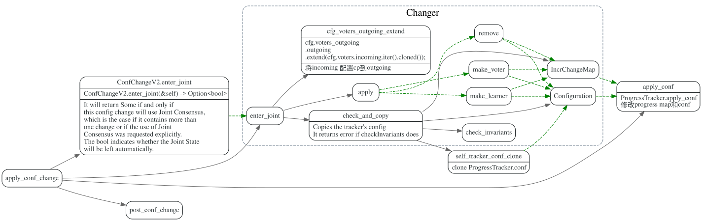
leave joint
leader 在commit_apply时, 如果发现pending_conf_index 的日志被
commit了，且prs.conf().auto_leave会发送空的EntryConfChangeV2消息。
节点在处理(apply_conf_change)该空消息时, 会进入leave joint，清空outgoing的配置，
使用incoming新的配置。
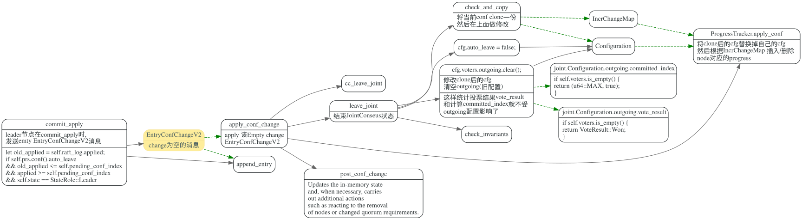
#![allow(unused_variables)] fn main() { pub fn commit_apply(&mut self, applied: u64) { let old_applied = self.raft_log.applied; #[allow(deprecated)] self.raft_log.applied_to(applied); // TODO: it may never auto_leave if leader steps down before enter joint is applied. if self.prs.conf().auto_leave && old_applied <= self.pending_conf_index && applied >= self.pending_conf_index && self.state == StateRole::Leader { // If the current (and most recent, at least for this leader's term) // configuration should be auto-left, initiate that now. We use a // nil Data which unmarshals into an empty ConfChangeV2 and has the // benefit that appendEntry can never refuse it based on its size // (which registers as zero). let mut entry = Entry::default(); entry.set_entry_type(EntryType::EntryConfChangeV2); // append_entry will never refuse an empty if !self.append_entry(&mut [entry]) { panic!("appending an empty EntryConfChangeV2 should never be dropped") } self.pending_conf_index = self.raft_log.last_index(); info!(self.logger, "initiating automatic transition out of joint configuration"; "config" => ?self.prs.conf()); } } }
post conf change
暂时还不太清楚post conf change的作用是什么
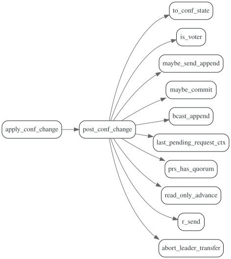
group commit
Read 线性一致性
data struct
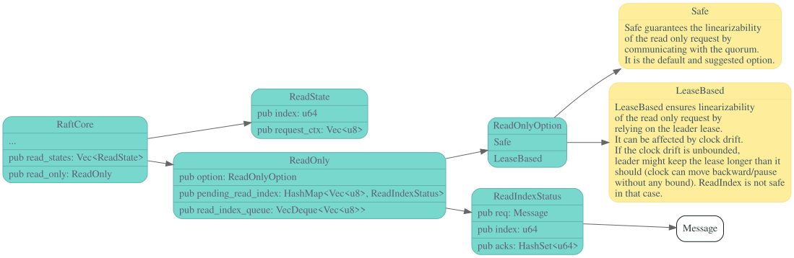
ReadIndex
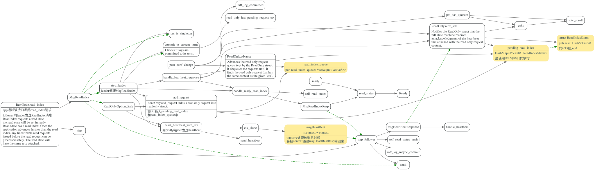
根据线性一致性和Raft中描述,Leader上ReadIndex流程如下:
leader节点在处理读请求时，首先需要与集群多数节点确认自己依然是Leader，然后读取已经被应用到应用状态机的最新数据。
- 记录当前的commit index，称为 ReadIndex
- 向 Follower 发起一次心跳，如果大多数节点回复了，那就能确定现在仍然是 Leader
- 等待状态机至少应用到 ReadIndex 记录的 Log
- 执行读请求，将结果返回给 Client
leader: MsgReadIndex
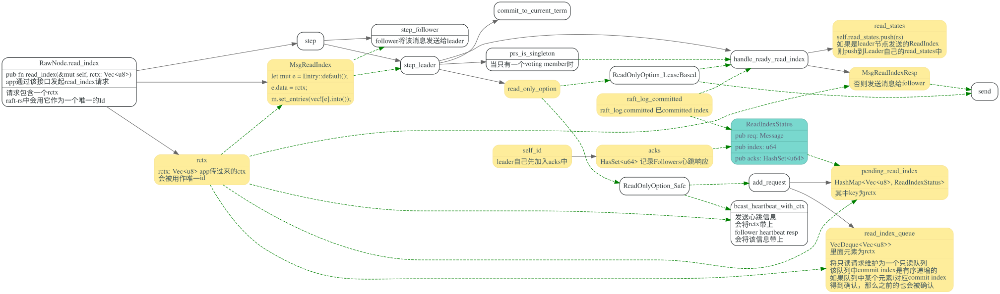
leader: handler heartbeat resp
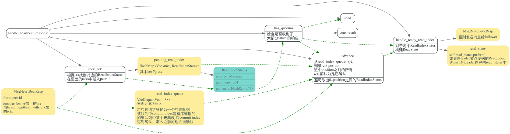
follower: handler MsgReadIndexResp
follower收到MsgReadIndexResp后，会将ReadState
放入自己的read_states中，在RawNode.ready时候
会返回给上层应用。
LeaseRead
服务对接接口
ready
然后调用ready获取需要发送的messages, snapshot等, 最后获取 一个Ready struct
Ready 结构包括了一些系列 Raft 状态的更新，在本文中我们需要关注的是：
hs: Raft 相关的元信息更新，如当前的 term，投票结果，committed index 等等。
committed_entries: 最新被 commit 的日志，需要应用到状态机中。
messages: 需要发送给其他 peer 的日志。
entries: 需要保存的日志。
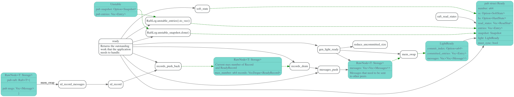
#![allow(unused_variables)] fn main() { /// Ready encapsulates the entries and messages that are ready to read, /// be saved to stable storage, committed or sent to other peers. #[derive(Default, Debug, PartialEq)] pub struct Ready { number: u64, ss: Option<SoftState>, hs: Option<HardState>, read_states: Vec<ReadState>, entries: Vec<Entry>, snapshot: Snapshot, light: LightReady, must_sync: bool, } }
advance
#![allow(unused_variables)] fn main() { /// Advances the ready after fully processing it. /// /// Fully processing a ready requires to persist snapshot, entries and hard states, apply all /// committed entries, send all messages. /// /// Returns the LightReady that contains commit index, committed entries and messages. `LightReady` /// contains updates that only valid after persisting last ready. It should also be fully processed. /// Then `advance_apply` or `advance_apply_to` should be used later to update applying progress. pub fn advance(&mut self, rd: Ready) -> LightReady { let applied = self.commit_since_index; let light_rd = self.advance_append(rd); self.advance_apply_to(applied); light_rd } }
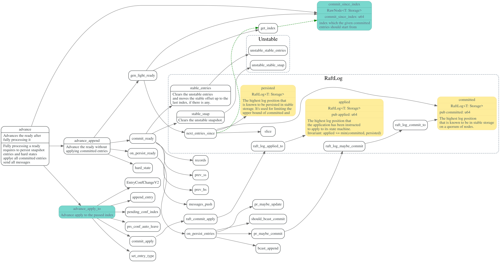
step
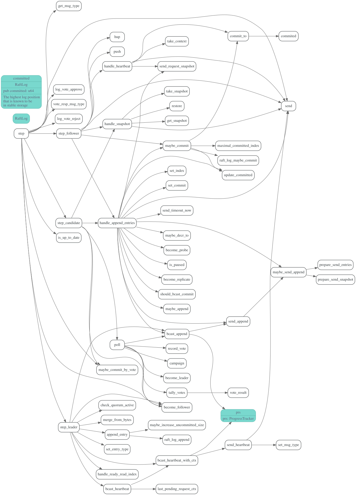
参考
TODO:
[] precandidate [].leaner [] leade transfer
draft
tikv apply read states
tikv apply read states